Stručný popis
Tabulka slouží k pokročilé editaci Denního výkonu, kdy je editován právě jeden Denní výkon.
Uživatelské rozhraní
Rozložení
Drátový diagram
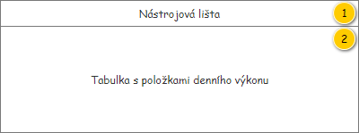
Přehled UI komponent
| Callout | Skupina |
|---|---|
| 1 | Nástrojová lišta |
| 2 | Tabulka s položkami denního výkonu |
Nástrojová lišta
Nástrojová lišta je skryta v případě, kdy se v rámci nástrojové lišty nevyskytuje ani jedna viditelná komponenta.
Poznámka: Provedené změny Denního výkonu se okamžitě projeví i na uživatelském rozhraní.
Drátový diagram
Poznámka: Náhled je pouze ilustrativní, směrodatný je popis uvedený v rámci tabulky.
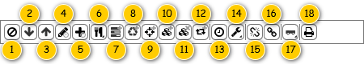
Přehled UI komponent
Pokud uživatel vjede myší na prvek nástrojové lišty, je zobrazena bublinková nápověda. V rámci bublinkové nápovědy, pokud není uvedeno jinak, je zobrazen text ve sloupci Komponenta.
| Pořadí | Komponenta | Nadpis | Typ komponenty | Příklad hodnoty | Hodnota | Výchozí hodnota | Formát | Zpřístupněná | Viditelná | Chování | Validace | Poznámka |
|---|---|---|---|---|---|---|---|---|---|---|---|---|
| 1 | Odebrání položky | – | Button
| – | – | – | – | Vždy | Pokud má uživatel právo na editaci Denního výkonu (EDIT_RP_DAILY_ROUTES, viz Oprávnění na typ entity). Pokud je denní výkon v jednom z dále uvedených stavů (atribut Stav):
Pokud:
| Pokud je označena Položka denního výkonu – spustí , na vstup UC jsou předány následující hodnoty:
Pokud je označena Lokace objednané služby – spustí , na vstup UC jsou předány následující hodnoty:
| – | – |
| 2 | Posunutí položky dolů | – | Button
| – | – | – | – | Vždy | Pokud má uživatel právo na editaci Denního výkonu (EDIT_RP_DAILY_ROUTES, viz Oprávnění na typ entity). Pokud je denní výkon v jednom z dále uvedených stavů (atribut Stav):
| – | – | |
| 3 | Posunutí položky nahoru | – | Button
| – | – | – | – | Vždy | Pokud má uživatel právo na editaci Denního výkonu (EDIT_RP_DAILY_ROUTES, viz Oprávnění na typ entity). Pokud je denní výkon v jednom z dále uvedených stavů (atribut Stav):
| – | – | |
| 4 | Změna doby manipulace | – | Button
| – | – | – | – | Vždy | Pokud má uživatel právo na editaci Denního výkonu (EDIT_RP_DAILY_ROUTES, viz Oprávnění na typ entity). Pokud je denní výkon v jednom z dále uvedených stavů (atribut Stav):
Pokud je u označené Lokace objednané služby sledována realizace:
| Spustí , na vstup UC jsou předány následující hodnoty:
| – | – |
| 5 | Rychlá změna doby manipulace | – | Button
| – | – | – | – | Vždy | Pokud má uživatel právo na editaci Denního výkonu (EDIT_RP_DAILY_ROUTES, viz Oprávnění na typ entity). Pokud je denní výkon v jednom z dále uvedených stavů (atribut Stav):
Pokud je u označené Lokace objednané služby sledována realizace:
| Spustí , na vstup UC jsou předány následující hodnoty:
| – | – |
| 6 | Nastavení přestávky | – | Button
| – | – | – | – | Vždy | Pokud má uživatel právo na editaci Denního výkonu (EDIT_RP_DAILY_ROUTES, viz Oprávnění na typ entity). Pokud je denní výkon v jednom z dále uvedených stavů (atribut Stav):
| Nastavení přestávky | – | – |
| 7 | Vložení provozovny | – | Button
| – | – | – | – | Vždy | Pokud má uživatel právo na editaci Denního výkonu (EDIT_RP_DAILY_ROUTES, viz Oprávnění na typ entity). Pokud je denní výkon v jednom z dále uvedených stavů (atribut Stav):
| Spustí , na vstup UC jsou předány následující hodnoty:
| – | – |
| 8 | Vložení likvidačního místa | – | Button
| – | – | – | – | Vždy | Pokud má uživatel právo na editaci Denního výkonu (EDIT_RP_DAILY_ROUTES, viz Oprávnění na typ entity). Pokud je denní výkon v jednom z dále uvedených stavů (atribut Stav):
| Vložení likvidačního místa | – | – |
| 9 | Vložení bodu průjezdu | – | Button
| – | – | – | – | Vždy | Pokud má uživatel právo na editaci Denního výkonu (EDIT_RP_DAILY_ROUTES, viz Oprávnění na typ entity). Pokud je denní výkon v jednom z dále uvedených stavů (atribut Stav):
| Spustí , na vstup UC jsou předány následující hodnoty:
| – | – |
| 10 | Vytvoření kopie bodu průjezdu | – | Button
| – | – | – | – | Vždy | Pokud má uživatel právo na editaci Denního výkonu (EDIT_RP_DAILY_ROUTES, viz Oprávnění na typ entity). Pokud je denní výkon v jednom z dále uvedených stavů (atribut Stav):
Pokud je splněna jedna z uvedených podmínek (je označen bod průjezdu):
| Spustí , na vstup UC jsou předány následující hodnoty:
Poznámka: Pokud je označena Položka denního výkonu, jsou na vstup UC předány informace o v ní obsažené Lokaci objednané služby (atribut Lokace objednané služby entity Položka denního výkonu).
| – | – |
| 11 | Rozdělení objednané služby | – | Button
| – | – | – | – | Vždy | Pokud jsou splněny vstupní podmínky volaného UC. | Spustí , na vstup UC jsou předány následující hodnoty:
| – | – |
| 12 | Vytvoření místa dočasného uložení | – | Button
| – | – | – | – | Vždy | Pokud jsou splněny vstupní podmínky volaného UC. | Spustí , na vstup UC jsou předány následující hodnoty:
| – | – |
| 13 | Sloučení objednané služby | – | Button
| – | – | – | – | Vždy | Pokud se Denního výkonu nachází v jednom z uvedených stavů (atribut Stav):
Pokud je Položka denního výkonu jednoho z uvedených typů (atribut Typ položky):
Pokud jsou splněny vstupní podmínky volaného UC. | Spustí , na vstup UC jsou předány následující hodnoty:
| – | – |
| 14 | Vložení rozdělení směny | – | Button
| – | – | – | – | Vždy | Pokud má uživatel právo na editaci Denního výkonu (EDIT_RP_DAILY_ROUTES, viz Oprávnění na typ entity). Pokud je denní výkon v jednom z dále uvedených stavů (atribut Stav):
| Spustí , na vstup UC jsou předány následující hodnoty:
| – | – |
| 15 | Změna provozní doby | – | Button
| – | – | – | – | Vždy | Pokud má uživatel právo na editaci Denního výkonu (EDIT_RP_DAILY_ROUTES, viz Oprávnění na typ entity). Pokud je denní výkon v jednom z dále uvedených stavů (atribut Stav):
| Spustí 200UC33: Upravit provozní dobu denního výkonu, na vstup UC jsou předány následující hodnoty:
| – | – |
| 16 | Nastavení alokace na servis | – | Button
| – | – | – | – | Vždy | Pokud má uživatel právo na editaci Denního výkonu (EDIT_RP_DAILY_ROUTES, viz Oprávnění na typ entity). Pokud je denní výkon v jednom z dále uvedených stavů (atribut Stav):
| Nastavení alokace na servis | – | – |
| 17 | Nastavení přívěsu | – | Button
| – | – | – | – | Vždy | Pokud má uživatel právo na editaci Denního výkonu (EDIT_RP_DAILY_ROUTES, viz Oprávnění na typ entity). Pokud je denní výkon v jednom z dále uvedených stavů (atribut Stav):
Pokud atribut Použití přívěsu zobrazeného Denního výkonu nabývá hodnoty TRUE. | Nastavení přívěsu | – | – |
| 18 | Vytištění sestavy POVOS | – | Button
| – | – | – | – | Vždy | Zobrazený Denní výkon je v jednom z uvedených stavů (atribut Stav):
| Spustí , na vstup UC jsou předány následující hodnoty:
| – | – |
| 19 | Vytištění prázdné sestavy POVOS | – | Button
| – | – | – | – | Vždy | – | Spustí , na vstup UC jsou předány následující hodnoty:
| – | – |
Chování
Posunutí položky
Uživatel může pomocí tlačítek v nástrojové liště měnit pozici Položky denního výkonu či Lokace objednané služby s tím, že dostupnost tlačítek a konkrétního posun v rámci tabulky se odvíjí dle jejich typu.
Poznámka: Vyhodnocení, zda je označena Položka denního výkonu či Lokace objednané služby, je popsáno samostatně – viz Označení položky a lokace.
Viditelnost tlačítka posunutí v nástrojové liště
Dostupnost tlačítek pro posunutí zvolené položky se řídí nejen dle vybraného typu položky, která je právě označena, ale i podle jejího aktuálního umístění v rámci Denního výkonu.
Položka denního výkonu
Tlačítko pro posunutí dolů je skryto v těchto případech:
- je označena Položka denního výkonu představující Start,
- je označena Položka denního výkonu představující Cíl,
- je označena poslední Položka denního výkonu (mimo Start a Cíl).
Tlačítko pro posunutí nahoru je skryto v těchto případech:
- je označena Položka denního výkonu představující Start,
- je označena Položka denního výkonu představující Cíl,
- je označena první Položka denního výkonu (mimo Start a Cíl).
Lokace objednané služby
Tlačítko pro posunutí dolů je zobrazeno v těchto případech:
- je označena Lokace objednané služby typu Likvidační místo, pokud jsou splněny obě uvedené podmínky:
- odpovídající Objednaná služba obsahuje alespoň dvě Lokace objednané služby typu Likvidační místo (nikoliv ale Výchozí likvidační místo),
- není označena poslední Lokace objednané služby typu Likvidační místo v rámci odpovídající Položky denního výkonu,
- je označena Lokace objednané služby typu Jiné,
- je označena Lokace objednané služby typu Časový interval.
Tlačítko pro posunutí nahoru je zobrazeno v těchto případech:
- je označena Lokace objednané služby typu Likvidační místo, pokud jsou splněny obě uvedené podmínky:
- odpovídající Objednaná služba obsahuje alespoň dvě Lokace objednané služby typu Likvidační místo (nikoliv ale Výchozí likvidační místo),
- není označena první Lokace objednané služby typu Likvidační místo v rámci odpovídající Položky denního výkonu,
- je označena Lokace objednané služby typu Jiné,
- je označena Lokace objednané služby typu Časový interval.
Posunutí položky dle typu a pozice
Akce vyvolaná stisknutím tlačítka pro posunutí položky v rámci tabulky může spustit čtyři různé akce, kdy výběr konkrétní akce závisí na typu a pozici právě zvolené položky.
Poznámka: U uvedeného chování při změnách pozice není ošetřeno posunutí mimo rozsah odpovídající kolekce – v případech, kdy by mohla tato situace nastat, není tlačítko pro posunutí dostupné.
Posunutí položky denního výkonu
Jedná se o změnu pozice na úrovni Položky denního výkonu v rámci jednoho Denního výkonu (atribut Položky denního výkonu entity Denní výkon).
| Typ položky denního výkonu | Upřesnění | Chování |
|---|---|---|
| Objednaná služba | – | Systém spustí , na vstup UC jsou předány následující hodnoty:
|
| Lokace objednané služby | Typ obsažené Lokace objednané služby je Likvidační místo nebo Provozovna. Poznámka: Situace, kdy by se jednalo o typ Výchozí likvidační místo nemůže aktuálně nastat. | |
Typ obsažené Lokace objednané služby je Jiné, a to jen v následujících případech:
| ||
| Časový interval | Jen v následujících případech:
| |
| Rozdělení | – |
Posunutí lokace objednané služby
Jedná se o změnu pozice, kdy z úrovně Položek denního výkonu dojde k přesunu na úroveň Lokací objednané služby.
| Typ lokace objednané služby | Upřesnění | Chování |
|---|---|---|
| Likvidační místo | Neplatí pro typ Výchozí likvidační místo. | Systém spustí , na vstup UC jsou předány následující hodnoty:
Poznámka: U pořadí je hledána další/předchozí Lokace objednané služby, není tedy potřeba přičítat/odečítat 1. |
Jiné | Jen mimo následující případy:
| |
| Časový interval | Jen mimo následující případy:
|
Posunutí položky denního výkonu na úroveň lokace objednané služby
Jedná se o změnu pozice na úrovni Lokace objednané služby v rámci jedné Položky denního výkonu, která musí být typu Objednaná služba (atribut Lokace objednané služby entity Objednaná služba – atribut Objednaná služba entity Položka denního výkonu).
| Typ položky denního výkonu | Upřesnění | Chování |
|---|---|---|
| Lokace objednané služby | Typ obsažené Lokace objednané služby je Jiné, a to jen v následujících případech:
| Systém nejprve vytvoří Lokaci objednané služby dle typu Položky denního výkonu a vloží ji do Objednané služby:
Poznámka: V rámci předešlého kroku je potlačeno spuštění 200UC29: Získat trasu denního výkonu pro aktualizaci trasy Denního výkonu. Následně systém odebere Položku denního výkonu – spustí (poznámka: není zobrazováno dialogové okno s dotazem, zda má být Položka denního výkonu opravdu odebrána), kdy jsou na vstup předány následující hodnoty:
Tím dojde k aktualizaci trasy Denního výkonu. Poznámka: Jednotlivé kroky nejsou postupně zobrazovány na uživatelském rozhraní – uživateli je zobrazen až konečný stav Denního výkonu. |
| Časový interval | Jen v následujících případech:
|
Posunutí lokace objednané služby na úroveň položky denního výkonu
Jedná se o změnu pozice, kdy z úrovně Lokací objednané služby dojde k přesunu na úroveň Položek denního výkonu.
| Typ lokace objednané služby | Upřesnění | Chování |
|---|---|---|
| Jiné | Jen v následujících případech:
| Systém nejprve vytvoří Položku denního výkonu dle typu Lokace objednané služby a vloží ji do Denního výkonu:
Následně systém odebere Lokaci objednané služby – spustí , kdy jsou na vstup předány následující hodnoty:
Poznámka: V rámci předešlých kroků je potlačeno spuštění 200UC29: Získat trasu denního výkonu pro aktualizaci trasy Denního výkonu. Nakonec Systém přesune vytvořenou Položku denního výkonu na požadovanou pozici v rámci Denního výkonu – spustí , kdy jsou na vstup předány následující hodnoty:
Tím dojde k aktualizaci trasy Denního výkonu. Poznámka: Jednotlivé kroky nejsou postupně zobrazovány na uživatelském rozhraní – uživateli je zobrazen až konečný stav Denního výkonu. |
| Časový interval | Jen v následujících případech:
|
Nastavení přestávky
Po kliknutí na ikonu pro nastavení přestávky je zobrazena nabídka, kde uživatel může vybrat jednu z uvedených možností – viz obrázek.
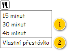
| Callout | Nadpis | Hodnota | Chování |
|---|---|---|---|
| 1 | Délka: 15, 30 a 45 minut. |
| |
| 2 | Vlastní přestávka | – |
|
Vložení likvidačního místa
Po kliknutí na ikonu pro vložení Likvidačního místa je zobrazena nabídka, kde uživatel může vybrat jednu z uvedených možností – viz ilustrativní obrázek.
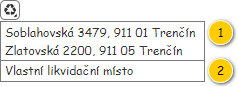
| Callout | Nadpis | Hodnota | Chování |
|---|---|---|---|
| 1 |
| Entita Lokace objednané služby. V nabídce jsou dostupné záznamy pro všechny takové Lokace objednané služby typu Likvidační místo (atribut Typ lokace), které se vyskytují v rámci právě editovaného Denního výkonu (lokace typu Výchozí likvidační místo nejsou uvažovány). Při vyhodnocení dostupných záznamů dochází ke „slučování“ Lokací objednaných služeb. Pokud jsou splněny všechny dále uvedené podmínky zároveň, je pro skupinu Lokací objednané služby vložen pouze jeden společný záznam:
| Spustí , na vstup jsou předány následující informace:
Kód nakládání nakonec není evidován jako číselník. |
| 2 | Vlastní likvidační místo | – | Spustí , na vstup jsou předány následující informace:
|
Nastavení alokace na servis
Po kliknutí na ikonu pro nastavení alokace na servis je zobrazena nabídka, kde uživatel může vybrat jednu z uvedených možností – viz obrázek.
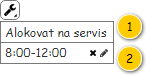
| Callout | Nadpis | Hodnota | Chování |
|---|---|---|---|
| 1 | Alokovat na servis | – | |
| 2 | <Čas omezení od>-<Čas omezení do> | Entita Interval omezení denního výkonu – atribut Intervaly omezení v editovaném Denním výkonu. Jsou načteny takové Intervaly omezení denního výkonu, které mají hodnotu atributu Typ omezení nastavenou na Alokace na servis. Položky jsou řazeny dle atributu Čas omezení od, v případě shody pak dle atributu Čas omezení do – v obou případech vzestupně. | Tlačítko odebrání:
Tlačítko editace:
|
Nastavení přívěsu
Po kliknutí na ikonu pro nastavení přívěsu je zobrazena nabídka, kde uživatel může vybrat jednu z uvedených možností – viz obrázek.
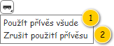
| Callout | Nadpis | Chování |
|---|---|---|
| 1 | Použít přívěs všude | Provede nastavení hodnoty atributu Přívěs všech Položek denního výkonu obsažených v editovaném Denním výkonu na TRUE. |
| 2 | Zrušit použití přívěsu | Provede nastavení hodnoty atributu Přívěs všech Položek denního výkonu obsažených v editovaném Denním výkonu na FALSE. |
Tabulka s položkami denního výkonu
Použité barvy a ikony jsou společné napříč celou obrazovkou pro editaci Denního výkonu, proto jsou uvedeny na jednom místě – viz Použité barvy a ikony.
Drátový diagram
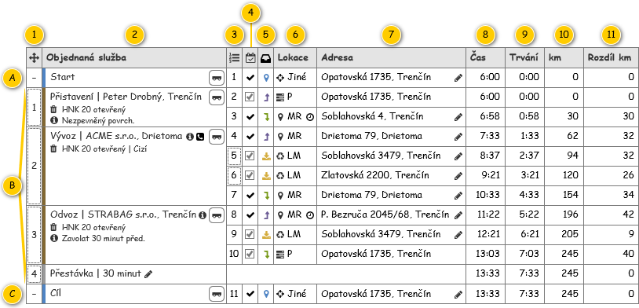
Přehled UI komponent
Řádky
| Callout | Hodnota | Poznámka |
|---|---|---|
| A | Atribut Počátečního položka denního výkonu entity Denní výkon. | – |
| B | Atribut Koncová položka denního výkonu entity Denní výkon. | Řazeno dle atributu Pořadí entity Položka denního výkonu. |
| C | Atribut Položky denního výkonu entity Denní výkon. | – |
Sloupce
| Callout | Komponenta | Nadpis | Typ komponenty | Příklad hodnoty | Hodnota | Výchozí hodnota | Formát | Možnosti sloupce | Zpřístupněná | Viditelná | Chování | Validace | Poznámka |
|---|---|---|---|---|---|---|---|---|---|---|---|---|---|
| 1 | Pořadí položky | Ikona: ra-list. | Label | 2 | Entita Položka denního výkonu. | – |
Pro Položky denního výkonu představující Start a Cíl (komponenty A a C) není pořadí zobrazeno. Je nahrazeno zástupným znakem: – (ALT+0150). Pokud je konkrétní komponenta zpřístupněna pro změnu pozice, je graficky zvýrazněna. | – | Pokud má uživatel právo na editaci Denního výkonu (EDIT_RP_DAILY_ROUTES, viz Oprávnění na typ entity). Pokud je denní výkon v jednom z dále uvedených stavů (atribut Stav):
Změna pozice pomocí Drag&Drop je dostupná pro všechny Položky denního výkonu mimo Star a Cíl (komponenty A a C). | Vždy | Změna pozice položky | – | – |
| 2 | Položka denního výkonu | Objednaná služba | Panel položky denního výkonu | – | Entita Položka denního výkonu. | – | – | – | – | – | – | – | – |
| 3 | Pořadí lokace | Ikona: ra-list. | Label | 3 | Entita Lokace objednané služby. | – |
Pokud je konkrétní komponenta zpřístupněna pro změnu pozice, je graficky zvýrazněna. Poznámka: Do algoritmu pro získání trasy bude doplněno v rámci jeho revize v M6. Nyní je počítáno na UI. | – | Pokud má uživatel právo na editaci Denního výkonu (EDIT_RP_DAILY_ROUTES, viz Oprávnění na typ entity). Pokud je denní výkon v jednom z dále uvedených stavů (atribut Stav):
Změna pozice pomocí Drag&Drop je dostupná pro Lokace objednané služby dle jejich typu:
| Vždy | Změna pozice položky | – | – |
| 4 | Provedení lokace | Ikona: ra-date-legit. | CheckBox | TRUE | Entita Lokace objednané služby. | – |
| – | Vždy | Po stisknutí ovládacího prvku dojde ke změně hodnoty v atributu Provést odpovídající entity Lokace objednané služby. Následně je nutné přepočítat trasu – spustí 200UC29: Získat trasu denního výkonu, na vstup UC jsou předány následující hodnoty:
Nakonec jsou aktualizovány informace zobrazené ve formuláři. | – | Pokud je u Lokace objednané služby nastaveno její provedení na FALSE, provedou se změny v zobrazení celého řádku – viz Lokace není provedena. | |
| 5 | Akce v lokaci | Akce | Label | Vyprázdnit (je zobrazena pouze ikona) | Entita Lokace objednané služby. | – |
Konkrétní akce jsou naznačeny ikonou, která je navíc barevně odlišena:
| – | Nikdy | Vždy | Po najetí myší na ikonu znázorňující akci v Lokaci objednané služby je zobrazena bublinková nápověda, ve které je uveden celý název akce (atribut Akce). | – | Požití nadpisu ve formě textu zajišťuje, že šířka sloupce je o něco širší než obsah buněk s hodnotami. To zajišťuje splnění jednoho z požadavků v M10. |
| 6 | Typ lokace | Lokace | Label | Likvidační místo | Entita Lokace objednané služby. | – | Konkrétní typy Lokace objednané služby jsou doplněny ikonou, která je v barvě textu. Samotný typ Lokace objednané služby je pak uveden formou zkratky:
| – | Nikdy | Vždy | Zobrazení doby manipulace | – | – |
| 7 | Adresa lokace | Adresa | Label | Opatovská 1735, 911 00 Trenčín | Entita Adresa – atribut Adresa entity Lokace objednané služby. | – | Pokud není dostupné Číslo orientační:
Pokud není dostupné Číslo popisné:
Pokud je komponenta zpřístupněna pro editaci, je zobrazeno tlačítko editace (ikona: ra-pencil). | – | Pouze přes tlačítko editace. Pokud má uživatel právo na editaci Denního výkonu (EDIT_RP_DAILY_ROUTES, viz Oprávnění na typ entity). Pokud je denní výkon v jednom z dále uvedených stavů (atribut Stav):
Možnost nastavení Adresy je dostupná dle konkrétního typu Lokace objednané služby:
| Vždy | Spustí , na vstup UC jsou předány následující hodnoty:
| – | – |
| – | Časové okno lokace | Časové okno | Panel časového okna | – | Entita Lokace objednané služby. | – | – | – | – | – | – | – | Není dále požadováno. |
| 8 | Předpokládaný čas příjezdu do lokace | Čas | Label | 7:33 | Získána výpočtem z jednotlivých Lokací objednané služby – viz Kumulativní doba jízdy a vzdálenost a čas realizace. | – |
| – | Nikdy | Vždy | – | – | – |
| 9 | Kumulativní doba jízdy v lokaci | Trvání | Label | 1:33 | Získána výpočtem z jednotlivých Lokací objednané služby – viz Kumulativní doba jízdy a vzdálenost a čas realizace. | – |
| – | Nikdy | Vždy | – | – | – |
| 10 | Kumulativní ujetá vzdálenost v lokaci | km | Label | 68 km | Získána výpočtem z jednotlivých Lokací objednané služby – viz Kumulativní doba jízdy a vzdálenost a čas realizace. | – |
| – | Nikdy | Vždy | – | – | – |
| 11 | Rozdíl ujeté vzdálenosti mezi lokacemi | Rozdíl km | Label | 22 km | Získána výpočtem z jednotlivých Lokací objednané služby – viz Kumulativní doba jízdy a vzdálenost a čas realizace. | – |
| – | Nikdy | Vždy | – | – | – |
| – | Poznámka k lokaci | Poznámka | Label | Zákazník informován. | Entita Lokace objednané služby. | – | Pokud je komponenta zpřístupněna pro editaci a zároveň obsahuje nějakou hodnotu, je zobrazeno tlačítko pro odebrání hodnoty (ikona: ra-cross). Pokud je komponenta zpřístupněna pro editaci, je zobrazeno tlačítko editace (ikona: ra-pencil). | – | Pouze přes tlačítko editace. Pokud má uživatel právo na editaci Denního výkonu (EDIT_RP_DAILY_ROUTES, viz Oprávnění na typ entity). Pokud je denní výkon v jednom z dále uvedených stavů (atribut Stav):
| Vždy | Odebrání poznámky – spustí , na vstup UC jsou předány následující hodnoty:
Změna poznámky – spustí , na vstup UC jsou předány následující hodnoty:
| – | Není v tuto chvíli požadováno. Do budoucna může být znovu zaneseno. |
Chování
Panel položky denního výkonu
Informace o Položka denního výkonu jsou zobrazeny v panelu, jehož obecná specifikace je dále popsána.
Drátový diagram
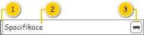
Přehled UI komponent
| Callout | Komponenta | Nadpis | Typ komponenty | Příklad hodnoty | Hodnota | Výchozí hodnota | Formát | Zpřístupněná | Viditelná | Chování | Validace | Poznámka |
|---|---|---|---|---|---|---|---|---|---|---|---|---|
| 1 | Barevné rozlišení položky denního výkonu | – | – | #826832 | Kód barvy se odvíjí od typu Položky denního výkonu – viz Použité barvy a ikony/Typ položky. | – | – | Nikdy | Vždy | – | – | – |
| 2 | Specifikace položky denního výkonu | – | Specifikace položky denního výkonu | – | – | – | – | – | Vždy | – | – | – |
| 3 | Nastavení přívěsu | – | ToggleButton
| – | Entita Položka denního výkonu. | – | Pokud je hodnota TRUE, tlačítko je „stisknuto“, v opačném případě je tlačítko zobrazeno ve stavu „nestisknuto“. | Vždy | Pokud má uživatel právo na editaci Denního výkonu (EDIT_RP_DAILY_ROUTES, viz Oprávnění na typ entity). Pokud je denní výkon v jednom z dále uvedených stavů (atribut Stav):
Pokud se nejedná o Položku denního výkonu typu časový interval (atribut Typ položky). | Provede negaci hodnoty atributu Přívěs entity Položka denního výkonu, u které byl vyvolán požadavek na nastavení přívěsu. Po najetí myší na tlačítko je zobrazena bublinková nápověda s pevně daným textem:
| – | – |
Specifikace položky denního výkonu
Specifikace konkrétní Položky denního výkonu se odvíjí od jejího typu – viz obrázek.
Drátový diagram
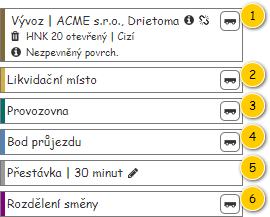
Přehled UI komponent
| Callout | Typ položky denního výkonu | Upřesnění | Specifikace |
|---|---|---|---|
| 1 | Objednaná služba | – | Specifikace položky denního výkonu typu Objednaná služba |
| 2 | Lokace objednané služby | Typ obsažené Lokace objednané služby: Likvidační místo. | Text: Likvidační místo |
| 3 | Lokace objednané služby | Typ obsažené Lokace objednané služby: Provozovna. | Text: Provozovna |
| 4 | Lokace objednané služby | Typ obsažené Lokace objednané služby: Jiné. | Text: Bod průjezdu |
| 5 | Časový interval | – | Specifikace položky denního výkonu typu Časový interval |
| 6 | Rozdělení | – | Text: Rozdělení směny |
Specifikace položky denního výkonu typu Objednaná služba
Panel vychází z 101UI05: Panel objednané služby, tomu odpovídá i dále uvedený popis.
Drátový diagram

Přehled UI komponent
| Callout | Komponenta | Nadpis | Typ komponenty | Příklad hodnoty | Hodnota | Výchozí hodnota | Formát | Zpřístupněná | Viditelná | Chování | Validace | Poznámka |
|---|---|---|---|---|---|---|---|---|---|---|---|---|
| 1 | Barevné rozlišení panelu | – | – | #BD5734 | – | – | – | – | Vždy. | – | – | Popsáno v rámci Panel položky denního výkonu, komponenta 1. |
| 2 | Identifikace objednaného úkonu | – | Label | Přistavení | STRABAG s.r.o. | Entita Objednaný úkon – atribut Objednaný úkon entity Objednaná služba. | – | Viz Identifikace objednaného úkonu.
| – | Vždy | – | – | – |
3 | Identifikace objednané nádoby | Ikona: ra-trash | Label | 17 20 13 | HNK 16 krytý (cizí) | Entita Objednaná služba. | – | Viz Identifikace objednané nádoby. | – | Vždy | – | – | – |
| 4 | Časové okno | Ikona: ra-clock | Label | 6:30-7:30 | Entita Objednaná služba. | – | <Čas realizace od>-<Čas realizace od> | – | Pokud je splněna alespoň jedna z uvedených podmínek:
| – | – | – |
| 5 | Poznámka | Ikona: ra-info-full | Label | Zavolat 30 minut předem. | Entita Objednaná služba. | – | Pokud nastane situace, že délka hodnoty přesahuje délku řádku v rámci panelu, je zobrazena pouze taková část textu, která se vejde právě na jeden řádek. Na konci zobrazené části textu je pak vložen znak „…“ (ALT+0133), který naznačuje, že není zobrazen celý text. Po najetí myši na tento řádek dojde k zobrazení bublinkové nápovědy s úplným textem. | – | Pokud je hodnota různá od NULL. | – | – | – |
| 6 | Identifikace objednávky | – | – | Objednávka: 1131-001028 | Entita Objednávka – atribut Objednávka entity Položka objednávky – atribut Položka objednávky entity Objednaná nádoba – atribut Objednaná nádoba entity Objednaný úkon – atribut Objednaný úkon entity Objednaná služba. | – | Objednávka: <Číslo objednávky>
| – | Pokud je hodnota různá od NULL. | Pokud je zobrazena ikona a uživatel na ni najede myší, je zobrazena bublinková nápověda s uvedenou hodnotou. | – | Hodnota se zobrazuje po najetí myši na ikonu ve formě bublinkové nápovědy. |
| 7 | Poznámka k místu realizace | – | – | Nezpevněný povrch. | Entita Položka objednávky – atribut Položka objednávky entity Objednaná nádoba – atribut Objednaná nádoba entity Objednaný úkon – atribut Objednaný úkon entity Objednaná služba. | – |
| – | Pokud je hodnota různá od NULL. | Pokud je zobrazena ikona a uživatel na ni najede myší, je zobrazena bublinková nápověda s uvedenou hodnotou. | – | Hodnota se zobrazuje po najetí myši na ikonu ve formě bublinkové nápovědy. |
| 8 | Kontakt k místu realizace | – | – | Pan Konečný, 0902 123 456. | Entita Položka objednávky – atribut Položka objednávky entity Objednaná nádoba – atribut Objednaná nádoba entity Objednaný úkon – atribut Objednaný úkon entity Objednaná služba. | – |
| – | Pokud je hodnota různá od NULL. | Pokud je zobrazena ikona a uživatel na ni najede myší, je zobrazena bublinková nápověda s uvedenou hodnotou. | – | Hodnota se zobrazuje po najetí myši na ikonu ve formě bublinkové nápovědy. |
| 9 | Nastavení přívěsu | – | – | – | – | – | – | – | – | – | – | Popsáno v rámci Panel položky denního výkonu, komponenta 3. |
| 10 | Indikace rozdělené služby | – | – | – | Pokud je splněna alespoň jedna z dále uvedených podmínek: TRUE.
Jinak: FALSE. | – |
| – | Pokud je získaná hodnota rovna TRUE. | Pokud je zobrazena ikona a uživatel na ni najede myší, je zobrazena bublinková nápověda s pevně daným textem:
| – | Pokud není ikona zobrazena, nezabírá žádný volný prostor. |
Specifikace položky denního výkonu typu Časový interval
Text zobrazený v položce má následující formát: Přestávka |
- Doba trvání: atribut Doba trvání entity Lokace objednané služby – atribut Lokace objednané služby entity Položka denního výkonu, u které byl vyvolán požadavek na editaci.
Pokud je umožněna editace Denního výkonu, je zobrazeno tlačítko editace:
- Ikona: ra-pencil.
Stisknutí tlačítka editace spustí , na vstup UC jsou předány následující hodnoty:
- Položka denního výkonu: Položka denního výkonu, u které byl vyvolán požadavek na editaci.
Provedení lokace
Možnost nastavit u Lokace objednané služby, zda má být obsloužena, je podmíněna několika podmínkami, které musí být splněny všechny zároveň.
- Pokud má uživatel právo na editaci Denního výkonu (EDIT_RP_DAILY_ROUTES, viz Oprávnění na typ entity).
- Pokud je denní výkon v jednom z dále uvedených stavů (atribut Stav):
- Plánovaný,
- Schválený,
- Plněný.
- Lokace objednané služby je obsažena v Položce denního výkonu typu Objednaná služba (atribut Typ položky).
- Možnost nastavení, zda bude Lokace objednané služby obsloužena, se odvíjí od jejího typu:
- Místo realizace: nikdy,
- Likvidační místo: vždy,
- Výchozí likvidační místo: nikdy,
- Provozovna: vždy,
- Jiné: nikdy,
- Časový interval: nikdy,
- Místo dočasného uložení: nikdy.
Může však nastat situace, která by vedla k nepovolenému stavu v rámci Denního výkonu – Položka denního výkonu typu Objednaná služba nebude obsahovat ani jednu Lokaci objednané služby, která má být provedena (poznámka: to může napsat v případě rozdělené Objednané služby). Postup je pak následující:
- Uživatel zadá požadavek, aby nebyla provedena určitá Lokace objednané služby.
- Pokud se jedná o poslední Lokaci objednané služby, která má být provedena (atribut Provést) v rámci Položka denního výkonu typu Objednaná služba.
- Systém zobrazí modální okno s informací, že musí být provedena alespoň jedna Lokace objednané služby v rámci Položka denního výkonu typu Objednaná služba (MSG_ERR_UNABLE_CANCEL_REALIZE, viz Systémové hlášky).
- Uživatel stisknutím tlačítka potvrdí zobrazené hlášení.
- Systém zavře modální okno se zobrazenou informací. Nedošlo ke změně hodnoty atributu Provést odpovídající entity Lokace objednané služby.
Zobrazení doby manipulace
V rámci buněk sloupce Typ lokace (komponenta 6) je formou ikony zobrazena indikace změněné doby manipulace odpovídající Lokace objednané služby (atribut Doba manipulace):
- Ikona: ra-tacho.
- Zarovnání: vpravo.
Ikona je pak zobrazena ve chvíli, kdy jsou u odpovídající Lokace objednané služby splněny všechny dále uvedené podmínky zároveň:
- Hodnota atributu Monitoring realizace je rovna TRUE.
- Hodnota atributu Doba manipulace je různá od výchozí doby manipulace (manipulationTime, viz ).
Samotná hodnota doby manipulace je pak zobrazena ve formě bublinkové nápovědy po najetí myši na ikonu zmíněnou ikonu. Formát je pak následující:
- Manipulace:
min
Panel časového okna
Poznámka: Není dále požadováno.
Časové okno Lokace objednané služby a jeho splnění je pro zlepšení čitelnosti znázorněno i graficky. Mohou pak nastat 4 základní situace – viz obrázek.
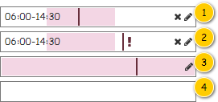
| Callout | Situace |
|---|---|
| 1 | U Lokace objednané služby je nastaveno časové okno, které je splněno. |
| 2 | U Lokace objednané služby je nastaveno časové okno, které není je splněno. |
| 3 | U Lokace objednané služby není nastaveno časové okno (zobrazena hodnota 0:00-23:59). |
| 4 | U Lokace objednané služby je nastaveno, že nemá být v rámci Denního výkonu provedena. |
Dále je uveden popis jednotlivých částí – viz obrázek.
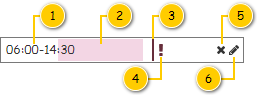
| Callout | Komponenta | Nadpis | Typ komponenty | Příklad hodnoty | Hodnota | Výchozí hodnota | Formát | Zpřístupněná | Viditelná | Chování | Validace | Poznámka |
|---|---|---|---|---|---|---|---|---|---|---|---|---|
| 1 | Časové okno | – | Label | 6:00-14:30 | Entita Lokace objednané služby. | – | Nikdy | Pokud má být Lokace objednané služby provedena:
Pokud Lokace objednané služby obsahuje časové okno – je splněna alespoň jedna z uvedených podmínek:
| – | – | – | |
| 2 | Grafické znázornění časového okna | – | – | – | Entita Lokace objednané služby. | – | Grafické znázornění časového okna:
| Nikdy | Pokud má být Lokace objednané služby provedena:
| – | – | – |
| 3 | Čas realizace | – | – | – | Získána výpočtem z jednotlivých Lokací objednané služby – viz Kumulativní doba jízdy a vzdálenost a čas realizace. | – | – | Nikdy | Pokud má být Lokace objednané služby provedena:
| – | – | Pokud se získaný čas realizace pohybuje mimo Datum realizace, není vykreslen vůbec. |
| 4 | Indikace nesplnění časového okna | – | – | – | Entita Lokace objednané služby. | – | Barva a ikona: Diagram časové okna/Nesplněno časové okno. | Nikdy | Pokud má být Lokace objednané služby provedena:
Pokud realizace Lokace objednané služby není v rámci zadaného časového okna:
| – | – | Pokud se získaný čas realizace pohybuje mimo Datum realizace, není ikona vykreslena vůbec. Pokud by se ikona nevešla za znázorněný Čas realizace, je zobrazena před ním. |
| 5 | Zrušení časového okna | – | Button
| – | – | – | – | Vždy | Pokud má být Lokace objednané služby provedena:
Pokud je umožněna editace Denního výkonu. Pokud Lokace objednané služby obsahuje časové okno – je splněna alespoň jedna z uvedených podmínek:
| Spustí , na vstup UC jsou předány následující hodnoty:
| – | – |
| 6 | Editace časového okna | – | Button
| – | – | – | – | Vždy | Pokud má být Lokace objednané služby provedena:
Pokud je umožněna editace Denního výkonu. | Spustí , na vstup UC jsou předány následující hodnoty:
| – | – |
Nakonec je nutné poznamenat, že buňka tabulky představuje časové rozmezí zahrnující jeden den (0:00-23:59).
Kumulativní doba jízdy a vzdálenost a čas realizace
Při každé aktualizaci Denního výkonu dojde k přepočítání jeho trasy, což způsobí změny hodnot ve sloupcích: Předpokládaný čas příjezdu do lokace, Kumulativní doba jízdy v lokaci, Kumulativní ujetá vzdálenost v lokaci a Rozdíl ujeté vzdálenosti mezi lokacemi.
Uvedené hodnoty jsou pak získány následovně
Pomocné proměnné
- ZačátekJízdy: Čas – okamžik, kdy je započata jízda Denního výkonu (poznámka: hodnota je nastavena na začátku toku událostí a dále už se nemění).
- KumulativníDobaJízdy: Celé kladné číslo – počet minut od započetí jízdy Denního výkonu.
- KumulativníUjetáVzdálenost: Celé kladné číslo – počet kilometrů od započetí jízdy Denního výkonu.
- KumulativníUjetáVzdálenostPředchozí = Celé kladné číslo – počet kilometrů od započetí jízdy Denního výkonu v předchozí Lokaci objednané služby.
Tok událostí
- Systém nastaví pomocné proměnné do výchozího stavu.
- ZačátekJízdy = hodnota atributu Začátek provozní doby entity Denní výkon, který je právě editován.
- KumulativníDobaJízdy = 0.
- KumulativníUjetáVzdálenost = 0.
- KumulativníUjetáVzdálenostPředchozí = 0.
- Systém doplní informace pro Položku denního výkonu představující Start.
- Systém nastaví hodnoty u Lokace objednané služby – viz Nastavit hodnoty u lokací, na vstup jsou předány následující hodnoty:
- Lokace objednané služby: atribut Lokace objednané služby entity Položku denního výkonu představující Start (atribut Počáteční položka denního výkonu entity Denní výkon).
- Lokace objednané služby: atribut Lokace objednané služby entity Položku denního výkonu představující Start (atribut Počáteční položka denního výkonu entity Denní výkon).
- Systém aktualizuje hodnoty pomocných proměnných – viz Aktualizovat pomocné proměnné, na vstup jsou předány následující hodnoty:
- Lokace objednané služby: atribut Lokace objednané služby entity Položku denního výkonu představující Start (atribut Počáteční položka denního výkonu entity Denní výkon).
- Lokace objednané služby: atribut Lokace objednané služby entity Položku denního výkonu představující Start (atribut Počáteční položka denního výkonu entity Denní výkon).
- Systém nastaví hodnoty u Lokace objednané služby – viz Nastavit hodnoty u lokací, na vstup jsou předány následující hodnoty:
- Pro všechny Položky denního výkonu (atribut Položky denního výkonu entity Denní výkon), kdy jsou jednotlivé Položky denního výkonu procházeny dle atributu Pořadí.
- Systém doplní informace pro Položku denního výkonu dle jejího typu (atribut Typ položky entity Položka denního výkonu):
- Objednaná služba:
- Systém nastaví hodnoty a aktualizuje pomocné proměnné – viz Nastavit hodnoty u položky typu Objednaná služba, na vstup jsou předány následující hodnoty:
- Položka denního výkonu: Položku denního výkonu, která je právě zkoumána.
- Položka denního výkonu: Položku denního výkonu, která je právě zkoumána.
- Systém nastaví hodnoty a aktualizuje pomocné proměnné – viz Nastavit hodnoty u položky typu Objednaná služba, na vstup jsou předány následující hodnoty:
- Lokace objednané služby, Časový interval, Rozdělení:
- Systém nastaví hodnoty u Lokace objednané služby – viz Nastavit hodnoty u lokací, na vstup jsou předány následující hodnoty:
- Lokace objednané služby: atribut Lokace objednané služby entity Položku denního výkonu, která je právě zkoumána.
- Lokace objednané služby: atribut Lokace objednané služby entity Položku denního výkonu, která je právě zkoumána.
- Systém aktualizuje hodnoty pomocných proměnných – viz Aktualizovat pomocné proměnné , na vstup jsou předány následující hodnoty:
- Lokace objednané služby: atribut Lokace objednané služby entity Položku denního výkonu, která je právě zkoumána.
- Lokace objednané služby: atribut Lokace objednané služby entity Položku denního výkonu, která je právě zkoumána.
- Systém nastaví hodnoty u Lokace objednané služby – viz Nastavit hodnoty u lokací, na vstup jsou předány následující hodnoty:
- Objednaná služba:
- Systém doplní informace pro Položku denního výkonu dle jejího typu (atribut Typ položky entity Položka denního výkonu):
- Systém doplní informace pro Položku denního výkonu představující Cíl.
- Systém nastaví hodnoty u Lokace objednané služby – viz Nastavit hodnoty u lokací, na vstup jsou předány následující hodnoty:
- Lokace objednané služby: atribut Lokace objednané služby entity Položku denního výkonu představující Cíl (atribut Koncová položka denního výkonu entity Denní výkon).
- Lokace objednané služby: atribut Lokace objednané služby entity Položku denního výkonu představující Cíl (atribut Koncová položka denního výkonu entity Denní výkon).
- Systém nastaví hodnoty u Lokace objednané služby – viz Nastavit hodnoty u lokací, na vstup jsou předány následující hodnoty:
Nastavit hodnoty u položky typu Objednaná služba
Nastavení jednotlivých Lokací objednané služby je prováděno postupně, dokud nejsou zaneseny všechny Lokace objednané služby.
Na vstupu jsou předána následující data:
- Entita Položka denního výkonu.
Postup je pak následující:
- Pokud je v Položce denního výkonu k dispozici Lokace objednané služby (poznámka: jedná se o Položku denního výkonu, jejíž doba realizace je definována uživatelem).
- Systém nastaví hodnoty u Lokace objednané služby – viz Nastavit hodnoty u lokací, na vstup jsou předány následující hodnoty:
- Lokace objednané služby: atribut Lokace objednané služby entity Položku denního výkonu, která byla předána na vstupu.
- Systém aktualizuje hodnoty pomocných proměnných – viz Aktualizovat pomocné proměnné, na vstup jsou předány následující hodnoty:
- Lokace objednané služby: atribut Lokace objednané služby entity Položku denního výkonu, která byla předána na vstupu.
- Konec toku událostí.
- Systém nastaví hodnoty u Lokace objednané služby – viz Nastavit hodnoty u lokací, na vstup jsou předány následující hodnoty:
- Pro všechny Lokace objednané služby (atribut Lokace objednané služby entity Objednaná služba – atribut Objednaná služba entity Položka denního výkonu, která byla předána na vstupu), kdy jsou jednotlivé Lokace objednané služby procházeny dle atributu Pořadí.
- Systém nastaví hodnoty u Lokace objednané služby – viz Nastavit hodnoty u lokací, na vstup jsou předány následující hodnoty:
- Lokace objednané služby: Lokace objednané služby, která je právě zkoumána.
- Systém aktualizuje hodnoty pomocných proměnných – viz Aktualizovat pomocné proměnné, na vstup jsou předány následující hodnoty:
- Lokace objednané služby: Lokace objednané služby, která je právě zkoumána.
- Systém nastaví hodnoty u Lokace objednané služby – viz Nastavit hodnoty u lokací, na vstup jsou předány následující hodnoty:
Nastavit hodnoty u lokací
Způsob, kterým jsou vypsány získané informace u konkrétní Lokace objednané služby, je společný pro všechny zobrazené Lokace objednané služby.
Na vstupu jsou předána následující data:
- Entita Lokace objednané služby.
Postup je pak následující:
- Pokud Lokace objednané služby nemá být provedena: Provést == FALSE (atribut Provést entity Lokace objednané služby, která byla předána na vstupu).
- Systém v odpovídajících sloupcích pro danou Lokaci objednané služby vyplní hodnotu Není k dispozici:
- Trvání: znak – (ALT+0150).
- Čas: znak – (ALT+0150).
- Vzdálenost: znak – (ALT+0150).
- Konec toku událostí.
- Systém v odpovídajících sloupcích pro danou Lokaci objednané služby vyplní hodnotu Není k dispozici:
- Systém v odpovídajících sloupcích pro danou Lokaci objednané služby vyplní hodnotu v odpovídajícím formátu.
- Předpokládaný čas příjezdu do lokace: ZačátekJízdy + KumulativníDobaJízdy.
- Kumulativní doba jízdy v lokaci: KumulativníDobaJízdy.
- Kumulativní ujetá vzdálenost: KumulativníUjetáVzdálenost.
- Rozdíl ujeté vzdálenosti mezi lokacemi: KumulativníUjetáVzdálenost - KumulativníUjetáVzdálenostPředchozí.
- Systém aktualizuje hodnotu pomocné proměnné KumulativníUjetáVzdálenostPředchozí:
- KumulativníUjetáVzdálenostPředchozí: KumulativníUjetáVzdálenost.
- KumulativníUjetáVzdálenostPředchozí: KumulativníUjetáVzdálenost.
- Systém vykreslí předpokládaný čas realizace ve sloupci Časové okno dle typu Lokaci objednané služby.
- Místo realizace, Likvidační místo, Provozovna:
- Začátek: ZačátekJízdy + KumulativníDobaJízdy.
- Konec: ZačátekJízdy + KumulativníDobaJízdy + Doba manipulace (atribut Doba manipulace entity Lokace objednané služby, která byla předána na vstupu).
- Barva: Diagram časové okna/Čas realizace.
- Jiné:
- Začátek: ZačátekJízdy + KumulativníDobaJízdy - x (TODO: Specifikovat délku, zatím vložit něco rozumného…).
- Konec: ZačátekJízdy + KumulativníDobaJízdy + x (TODO: Specifikovat délku, zatím vložit něco rozumného…).
- Barva: Diagram časové okna/Čas realizace.
- Místo realizace, Likvidační místo, Provozovna:
Aktualizovat pomocné proměnné
Každou Lokaci objednané služby, která má být provedena v rámci Denního výkonu, je potřeba zanést do výpočtu.
Na vstupu jsou předána následující data:
- Entita Lokace objednané služby.
Postup je pak následující:
- Pokud Lokace objednané služby nemá být provedena: Provést == FALSE (atribut Provést entity Lokace objednané služby, která byla předána na vstupu).
- Konec toku událostí.
- Systém aktualizuje pomocné proměnné dle typu Lokace objednané služby (atribut Typ lokace).
- Místo realizace, Likvidační místo, Výchozí likvidační místo, Provozovna: KumulativníDobaJízdy += Doba manipulace (atribut Doba manipulace entity Lokace objednané služby, která byla předána na vstupu).
- Jiné: žádné změny (poznámka: aktuální řešení pracuje u Lokací objednané služby tohoto typu s nulovou délkou Doby manipulace).
- Časový interval: KumulativníDobaJízdy += Doba trvání (atribut Doba trvání entity Lokace objednané služby, která byla předána na vstupu).
- Systém aktualizuje pomocné proměnné o cestu do další Lokace objednané služby
- KumulativníDobaJízdy += Doba jízdy do další lokace (atribut Doba jízdy do další lokace entity Lokace objednané služby, která byla předána na vstupu).
- KumulativníUjetáVzdálenost += Vzdálenost do další lokace (atribut Vzdálenost do další lokace entity Lokace objednané služby, která byla předána na vstupu).
Změna pozice položky
Poznámka: Uvedené obrázky jsou především ilustrativní, nemusí tedy plně odpovídat aktuální implementaci. Na ilustrované chování to nemá vliv.
Uživatel může pomocí režimu Drag&Drop měnit pozici Položky denního výkonu či Lokace objednané služby s tím, že dostupnost změny pozice a možnost konkrétního umístění se odvíjí dle jejich typu – viz tabulka.
- Sloupec Dostupnost – udává, zda je možné změnit pozici položky.
- Sloupec Umístění – udává, kam je možné položku umístit.
Funkce je dostupná pouze v případě, kdy je umožněna editace Denního výkonu.
| Položka | Typ položky | Dostupnost | Umístění |
|---|---|---|---|
| Položky denního výkonu | Objednaná služba | Ano | Libovolně na úrovni Položek denního výkonu mimo Start a cíl. |
| Lokace objednané služby | Ano, pokud se nejedná o Položky denního výkonu představující Start a Cíl. | Odvíjí se od typu Lokace objednané služby obsažené v Položce denního výkonu:
| |
| Časový interval | Ano | Libovolně na úrovních:
| |
| Rozdělení | Ano | Libovolně na úrovních:
| |
| Lokace objednané služby | Místo realizace | Ne | – |
| Likvidační místo | Ano, pokud je v rámci odpovídající Položky denního výkonu typu Objednaná služba obsaženo více než jedno Likvidační místo. | Na úrovni Lokací objednané služby obsažených v odpovídající Položce denního výkonu tak, že mezi jednotlivými Likvidačními místy nesmí být vložena žádná Lokace objednané služby typu Místo realizace či Provozovna. Musí tedy být zachována struktura jednotlivých Lokací objednané služby tak, jak byla původně vygenerována. Mezi Lokace objednané služby typu Likvidační místo mohou být vkládány pouze Lokace objednané služby typu Jiné a Časový interval. | |
| Výchozí likvidační místo | Ne | – | |
| Provozovna | Ne | – | |
| Jiné | Ano, pokud je v rámci odpovídající Položky denního výkonu typu Objednaná služba obsažena více než jedna Lokace objednané služby. | Libovolně na úrovních:
| |
| Časový interval | Ano, pokud je v rámci odpovídající Položky denního výkonu typu Objednaná služba obsažena více než jedna Lokace objednané služby. | Libovolně na úrovních:
| |
| Místo dočasného uložení | Ne | – |
Poznámka: Pozici Položek denního výkonu představující Start a Cíl není možné měnit, Start musí být vždy první a Cíl vždy poslední.
Nakonec jsou na obrázcích naznačena místa, kam je možné jednotlivé položky umístit. Žlutá čára pak představuje právě toto místo.
Na prvním obrázku je naznačena situace, kde je přesouvána Položka denního výkonu typu Objednaná služba, Lokace objednané služby (mimo Lokace objednané služby typu Jiné) a Rozdělení.
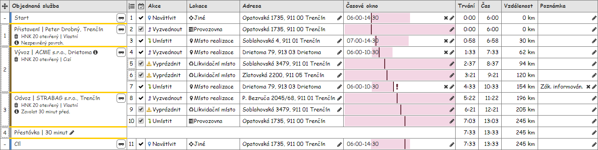
Dále je zobrazena situace, kdy je přesouvána Položka denního výkonu typu Lokace objednané služby (pouze Lokace objednané služby typu Jiné) a Časový interval. Dále zahrnuje situace, kdy je přesouvána Lokace objednané služby typu Jiné a Časový interval.
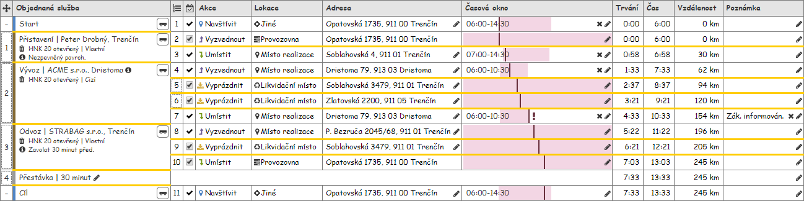
Na posledním obrázku je vidět situace, kdy je přesouvána Lokace objednané služby typu Likvidační místo. Tato Lokace objednané služby může měnit pořadí pouze v rámci odpovídající Položky denního výkonu, což je naznačeno přerušovanou čarou.
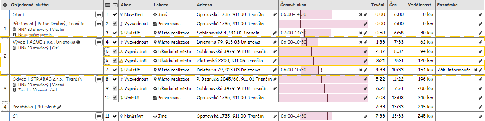
Označení položky a lokace
Poznámka: Uvedené obrázky jsou především ilustrativní, nemusí tedy plně odpovídat aktuální implementaci. Na ilustrované chování to nemá vliv.
Na prvním obrázku je naznačena situace, kdy je označena Položka denního výkonu typu Objednaná služba. Jedná se o jediný způsob, jak je možné označit více Lokací objednané služby.
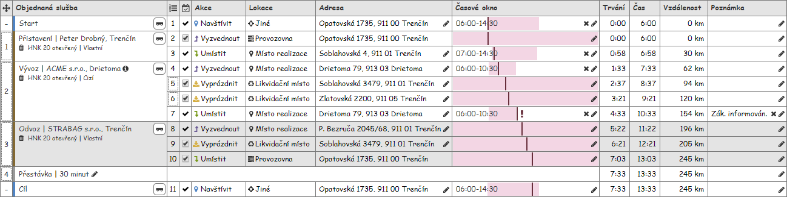
Dále je zobrazena situace, kdy je označena Položka denního výkonu, která není typu Objednaná služba. Ta obsahuje vždy právě jednu Lokaci objednané služby. Tento stav nastane i v případě, kdy je označena Lokace objednané služby uvnitř Položky denního výkonu zmíněného typu.
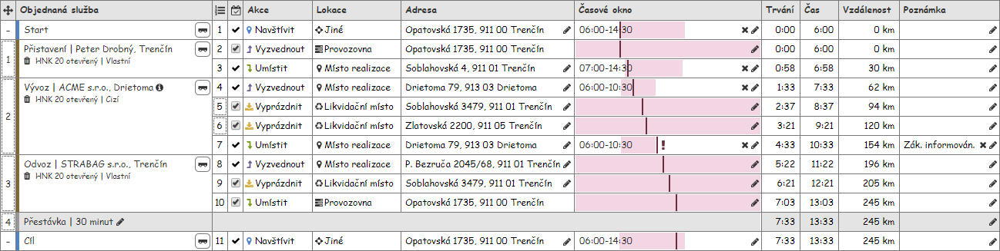
Na následujícím obrázku je vidět situace, kdy je označena Lokace objednané služby. Jak již bylo zmíněno, může být označena maximálně jedna Lokace objednané služby s výjimkou případu, kdy je označena Položka denního výkonu typu Objednaná služba.
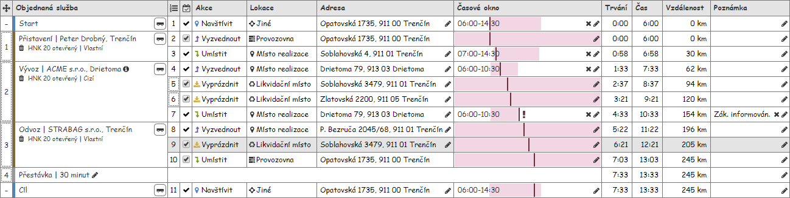
Poslední obrázek pak představuje situaci, kdy je označena Položka denního výkonu typu Objednaná služba (dále budeme pro lepší čitelnost psát přímo o Objednané službě) v případě, kdy jsou splněny všechny následující podmínky zároveň:
- Označená Objednaná služba je rozdělena – hodnota alespoň jednoho z dále uvedených atributů je různá od NULL:
- Následující objednaná služba,
- Předchozí objednaná služba.
- Existuje navazující Objednaná služba, která je vložena na stejný Denní výkon jako označená Objednaná služba (je také zobrazena v této tabulce). Vyhodnocovány jsou následující Objednané služby:
- Atribut Následující objednaná služba označené Objednané služby (takto je postupováno, dokud není hodnota uvedeného atributu rovna NULL – je totiž umožněno násobně dělení Objednaných služeb).
- Atribut Předchozí objednaná služba označené Objednané služby (takto je postupováno, dokud není hodnota uvedeného atributu rovna NULL – je totiž umožněno násobně dělení Objednaných služeb).
Označení Objednaných služeb pak probíhá následovně (viz obrázek):
- Označená Objednaná služba – odpovídající Položka denního výkonu je označena běžným způsobe, tedy i s obsaženými Lokacemi objednané služby (viz dříve).
- Nalezené Objednané služby – odpovídající Položky denního výkonu jsou pouze zvýrazněny, navíc bez obsažených Lokací objednané služby (na takové Položky denního výkonu se nevztahují ani akce nástrojové lišty).

Zobrazení položek typu Časový interval
Poznámka: Uvedené obrázky jsou především ilustrativní, nemusí tedy plně odpovídat aktuální implementaci. Na ilustrované chování to nemá vliv.
Mohou nastat případy, kdy uvedená struktura tabulky neplatí, jedná se pak o následující případy:
- položka představující Položku denního výkonu typu Časový interval,
- položka představující Lokaci objednané služby typu Časový interval.
Dále jsou tedy uvedeny konkrétní sloupce, pro které není zobrazena hodnota – viz obrázek.

| Callout | Typ položky | Sloupce | Specifikace panelu |
|---|---|---|---|
| 1 | Lokace objednané služby | Akce v lokaci, Typ lokace, Adresa lokace. | Vychází ze Specifikace položky denního výkonu typu Časový interval, rozdíl je pak ve zdroji hodnoty pro vypsaný text:
|
| 2 | Položka denního výkonu | Pořadí lokace, Provedení lokace, Akce v lokaci, Typ lokace, Adresa lokace. | Specifikace položky denního výkonu typu Časový interval |
Lokace není provedena
Pokud uživatel u konkrétní Lokace objednané služby nastaví, že nemá být provedena, projeví se to v odpovídajícím řádku tabulky – viz obrázek.

Žlutě je zvýrazněn řádek s Lokací objednané služby, která nemá být provedena (poznámka: žluté zvýraznění nebude implementováno). Oproti ostatním Lokacím objednané služby se liší v zobrazení hodnoty u dále uvedených sloupců, kde je místo konkrétní hodnoty uveden zástupný text: – (ALT+0150). Jedná se pak o tyto sloupce:
- Pořadí lokace,
- Předpokládaný čas příjezdu do lokace,
- Kumulativní doba jízdy v lokaci,
- Kumulativní ujetá vzdálenost v lokaci,
- Rozdíl ujeté vzdálenosti mezi lokacemi.
Navíc dochází ke změně způsobu vykreslení v těchto sloupcích, jednotlivé položky jsou zobrazeny s 50% průhledností.
Poznámka: Jak je vidět na obrázku, neprovedené Lokace objednané služby nejsou zahrnuty do celkového pořadí.
Grafický návrh
Revize
22. 2. 2024: Tomáš Nadrchal
| Odkaz | Stručný popis změny/doplnění |
|---|---|
| Viditelnost tlačítka posunutí v nástrojové liště | Doplněno chování pro nový typ lokace objednané služby (naznačeno modře). |
| Posunutí položky dle typu a pozice | Doplněno chování pro nový typ lokace objednané služby (naznačeno modře). |
| Vložení likvidačního místa | Doplněno chování pro nový typ lokace objednané služby (naznačeno modře). |
| Sloupce | Doplněno chování pro nový typ lokace objednané služby (naznačeno modře). |
| Provedení lokace | Doplněno chování pro nový typ lokace objednané služby (naznačeno modře). |
| Aktualizovat pomocné proměnné | Doplněno chování pro nový typ lokace objednané služby (naznačeno modře). |
| Změna pozice položky | Doplněno chování pro nový typ lokace objednané služby (naznačeno modře). |
4. 11. 2022: Tomáš Nadrchal
| Odkaz | Stručný popis změny/doplnění |
|---|---|
| Vložení likvidačního místa | Revize způsobu zobrazení kódu nakládání (naznačeno růžově). |
14. 6. 2022: Tomáš Nadrchal
| Odkaz | Stručný popis změny/doplnění |
|---|---|
| Vložení likvidačního místa | Revize způsobu zobrazení nabídky pro vložení likvidačního místa (naznačeno modře). |
22. 12. 2021: Tomáš Nadrchal
| Odkaz | Stručný popis změny/doplnění |
|---|---|
| Revize zobrazení lokace objednané služby v případě, kdy nemá být provedena její realizace (naznačeno modře). |
3. 12. 2019: Tomáš Nadrchal
| Odkaz | Stručný popis změny/doplnění |
|---|---|
| Nástrojová lišta | Revize tlačítek pro tisk sestavy POVOS (naznačeno růžově). |
28. 3. 2021: Tomáš Nadrchal
Provedeny změny v rámci celého dokumentu (naznačeno modře). Viz ID-040: Násobné rozdělení objednané služby.
Poznámka: Došlo i ke změně pořadí tlačítek nástrojové lišty (viz Nástrojová lišta).
29. 8. 2020: Tomáš Nadrchal
| Odkaz | Stručný popis změny/doplnění |
|---|---|
| Nástrojová lišta | Doplněno tlačítko pro tisk prázdné sestavy POVOS (naznačeno modře). |
14. 7. 2020: Tomáš Nadrchal
| Odkaz | Stručný popis změny/doplnění |
|---|---|
| Nástrojová lišta | Doplněna funkčnost pro vytvoření kopie bodu průjezdu (naznačeno modře). |
6. 10. 2019: Tomáš Nadrchal
| Odkaz | Stručný popis změny/doplnění |
|---|---|
| Nástrojová lišta | Doplněno chování dle uživatelských práv a tlačítka pro nastavení doby manipulace (naznačeno modře). |
| Tabulka s položkami denního výkonu | Aktualizace chování dle požadavků pro M10 (naznačeno modře). |
| Specifikace položky denního výkonu typu Objednaná služba | Aktualizace chování dle požadavků pro M10 (naznačeno modře). |
| Provedení lokace | Doplněno chování dle uživatelských práv (naznačeno modře). |
| Zobrazení doby manipulace | Doplnění zobrazení dob manipulace. |
| Kumulativní doba jízdy a vzdálenost a čas realizace | Doplněn výpočet dle požadavků pro M10 (naznačeno modře). |
| Zobrazení položek typu Časový interval | Aktualizace chování dle požadavků pro M10 (naznačeno modře). |
| Lokace není provedena | Aktualizace chování dle požadavků pro M10 (naznačeno modře). |
30. 8. 2019: Tomáš Nadrchal
| Odkaz | Stručný popis změny/doplnění |
|---|---|
| Nástrojová lišta | Doplněno tlačítko pro tisk sestavy POVOS (naznačeno modře). |
13. 6. 2019: Tomáš Nadrchal
| Odkaz | Stručný popis změny/doplnění |
|---|---|
| Nástrojová lišta | Revize viditelnosti tlačítek pro rozdělení Objednané služby a vytvoření místa dočasného uložení (naznačeno modře). Jedná se o doplnění nově vzniklých případů z M8. |
8. 4. 2019: Tomáš Nadrchal
| Odkaz | Stručný popis změny/doplnění |
|---|---|
| Sloupce | Doplněn popis chování sloupce pro místa dočasného uložení (MDU) – sloupce 3, 6, 7. |
| Doplněna indikace místa dočasného uložení. | |
| Doplněn popis chování pro Lokace objednané služby typu Místo dočasného uložení. | |
| Změna pozice položky | Doplněn popis chování pro Lokace objednané služby typu Místo dočasného uložení. |
3. 4. 2019: Tomáš Nadrchal
| Odkaz | Stručný popis změny/doplnění |
|---|---|
| Nástrojová lišta | Doplněn popis chování ovládacího prvku pro odebrání místa dočasného uložení (MDU) – komponenta 9. |
1. 4. 2019: Tomáš Nadrchal
| Odkaz | Stručný popis změny/doplnění |
|---|---|
| Nástrojová lišta | Aktualizována poznámka o dostupnosti nástrojové lišty. Doplněn popis chování ovládacího prvku pro vložení místa dočasného uložení (MDU) – komponenta 8. Aktualizován popis dostupnosti ovládacího prvku pro rozdělení Objednané služby – komponenta 12. Aktualizován popis dostupnosti ovládacího prvku pro sloučení rozdělené Objednané služby – komponenta 13. |
22. 2. 2019: Tomáš Nadrchal
| Odkaz | Stručný popis změny/doplnění |
|---|---|
| Lokace není provedena | Doplněno chování specifikující zobrazení řádku tabulky v případě, kdy nemá být Lokace objednané služby provedena. |
11. 2. 2019: Tomáš Nadrchal
| Odkaz | Stručný popis změny/doplnění |
|---|---|
| Provedení lokace | Doplněno chování specifikující, že v rámci Položky denního výkonu musí být alespoň jedna platná Lokace objednané služby, která má být provedena. |